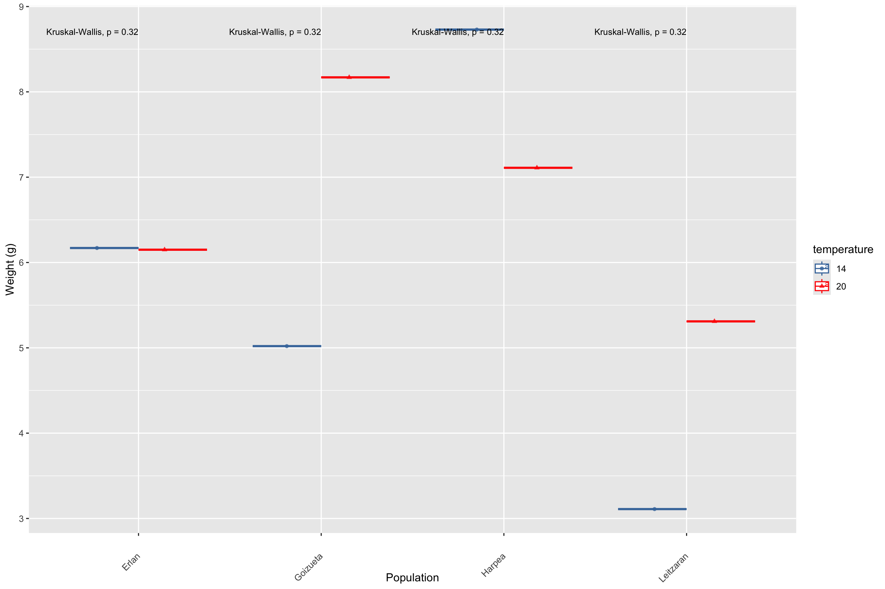
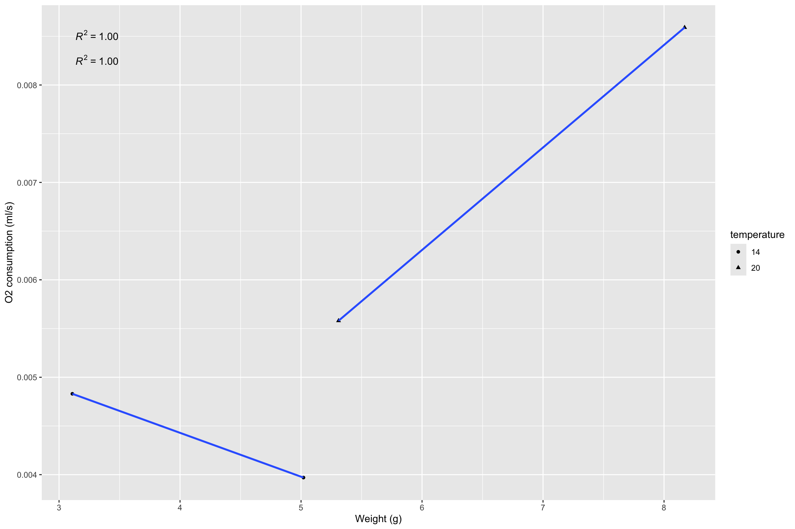
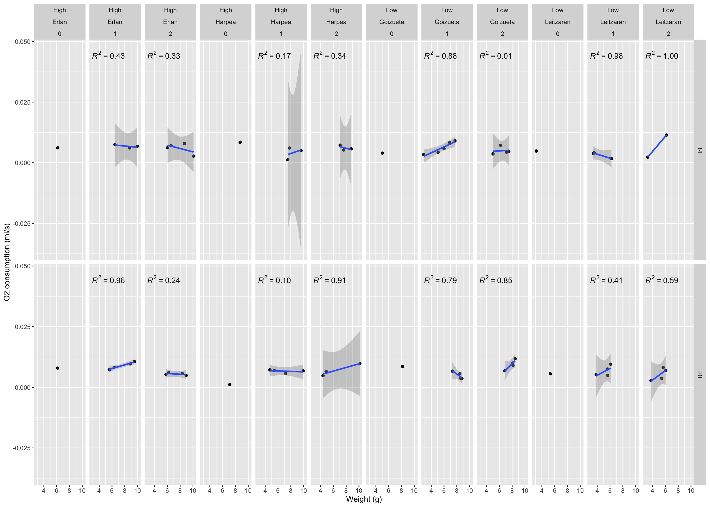
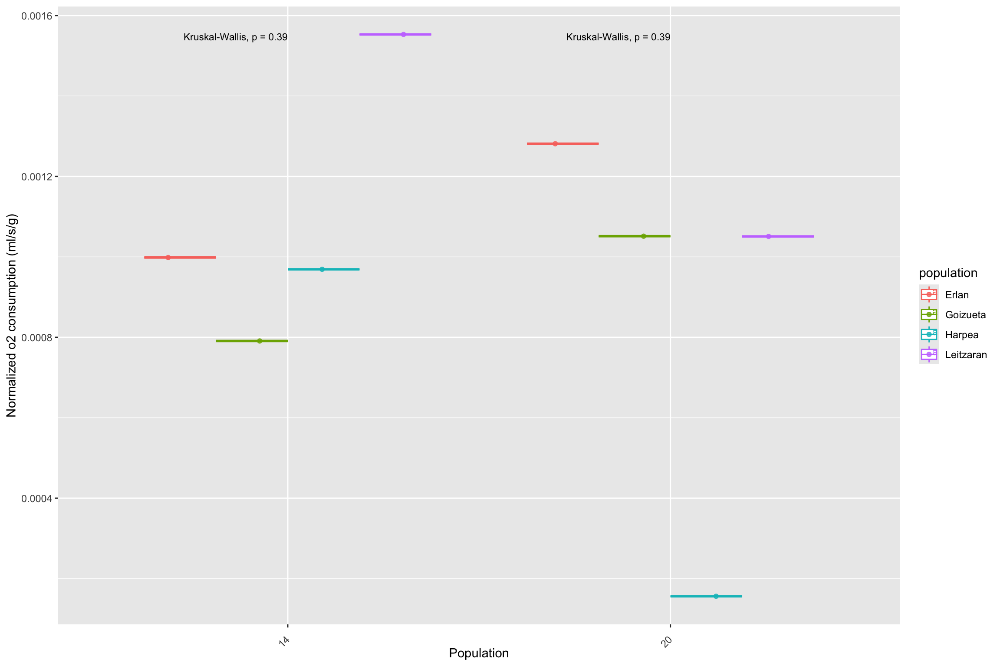

4 Weight distribution among groups
calotriton_resp1 %>%
filter(time_point=="0")%>%
ggplot(aes(x = population, y = weight, color=temperature, shape=temperature, alpha=0.2)) +
geom_boxplot()+
geom_jitter()+
theme(axis.text.x = element_text(angle = 45, vjust = 0.5, hjust=1))+
stat_compare_means(size=3,vjust = 0.8, hjust=1 )+
theme(legend.position="right")+
labs(x = "Population", y= "Weight (g)")
weight_subset<-calotriton_resp1 %>%
filter(time_point=="0")
#Overall
weight_subset$weight %>% mean()[1] 6.22125[1] 1.806429#In high elevation newts
weight_subset_high<-weight_subset %>%
filter(elevation=="High")
weight_subset_high$weight %>% mean()[1] 7.04[1] 1.212436#In low elevation newts
weight_subset_low<-weight_subset %>%
filter(elevation=="Low")
weight_subset_low$weight %>% mean()[1] 5.4025[1] 2.0872214.1 Metabolic scaling at the acclimation time-point
ggplot(weight_subset, aes(weight,o2, color=population, shape=temperature)) +
geom_point() +
geom_smooth(method = lm, formula = y ~ x)+
stat_poly_eq()+
labs(x = "Weight (g)", y= "O2 consumption (ml/s)")4.1.1 High elevation newts
ggplot(weight_subset_high, aes(weight ,o2, shape=temperature)) +
geom_point() +
geom_smooth(method = lm, formula = y ~ x)+
stat_poly_eq()+
labs(x = "Weight (g)", y= "O2 consumption (ml/s)")Warning in qt((1 - level)/2, df): NaNs produced
Warning in qt((1 - level)/2, df): NaNs producedWarning in max(ids, na.rm = TRUE): no non-missing arguments to max; returning -Inf
Warning in max(ids, na.rm = TRUE): no non-missing arguments to max; returning -Inf4.1.2 Low elevation newts
ggplot(weight_subset_low, aes(weight ,o2, shape=temperature)) +
geom_point() +
geom_smooth(method = lm, formula = y ~ x)+
stat_poly_eq()+
labs(x = "Weight (g)", y= "O2 consumption (ml/s)")Warning in qt((1 - level)/2, df): NaNs produced
Warning in qt((1 - level)/2, df): NaNs producedWarning in max(ids, na.rm = TRUE): no non-missing arguments to max; returning -Inf
Warning in max(ids, na.rm = TRUE): no non-missing arguments to max; returning -Inf
4.2 Metabolic scaling at each group and time-point
ggplot(calotriton_resp1, aes(weight ,o2)) +
geom_point() +
facet_grid(temperature~ factor(population)+time_point)+
geom_smooth(method = lm, formula = y ~ x)+
stat_poly_eq()+
labs(x = "Weight (g)", y= "O2 consumption (ml/s)")Warning in qt((1 - level)/2, df): NaNs producedWarning in max(ids, na.rm = TRUE): no non-missing arguments to max; returning -Inf
#Acclimation oxygen consumption per population
calotriton_resp1 %>%
filter(time_point=="0")%>%
ggplot(aes(x = population, y = o2_normalized, color=temperature, shape=temperature, alpha=0.2)) +
geom_boxplot()+
geom_jitter() +
#geom_text(aes(label = individual), hjust = 0, nudge_x = 0.05) +
theme(axis.text.x = element_text(angle = 45, vjust = 0.5, hjust=1))+
stat_compare_means(size=3,vjust = 0.8, hjust=1 )+
theme(legend.position="right")+
labs(x = "Population", y= "Normalized o2 consumption (ml/s/g)")#Acclimation oxygen consumption per elevation
calotriton_resp1 %>%
filter(time_point=="0")%>%
ggplot(aes(x = elevation, y = o2_normalized, shape=temperature, alpha=0.2)) +
geom_boxplot()+
geom_jitter() +
#geom_text(aes(label = individual), hjust = 0, nudge_x = 0.05) +
theme(axis.text.x = element_text(angle = 45, vjust = 0.5, hjust=1))+
stat_compare_means(size=3,vjust = 0.8, hjust=1 )+
theme(legend.position="right")+
labs(x = "Population", y= "Normalized o2 consumption (ml/s/g)")#Acclimation oxygen consumption per temperature
calotriton_resp1 %>%
filter(time_point=="0")%>%
ggplot(aes(x = temperature, y = o2_normalized, colour=population, alpha=0.2)) +
geom_boxplot()+
geom_jitter() +
#geom_text(aes(label = individual), hjust = 0, nudge_x = 0.05) +
theme(axis.text.x = element_text(angle = 45, vjust = 0.5, hjust=1))+
stat_compare_means(size=3,vjust = 0.8, hjust=1 )+
theme(legend.position="right")+
labs(x = "Population", y= "Normalized o2 consumption (ml/s/g)")